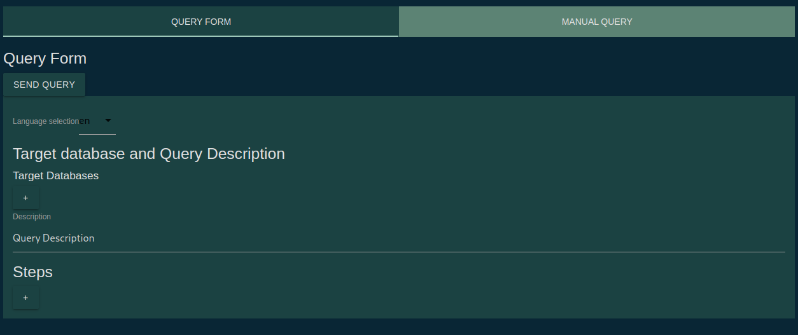
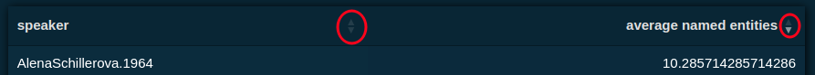

To get started with making a query to the data, enter the "Tools" tab by clicking it
in the top navigation bar.
There you will see the form for querying the data as well as a section where results
will be displayed after you send it.
For starters, you can choose the database you wish to query (database = corpus) in the
"Target Databases" section
by clicking the '+' button and then selecting from the available options.
You can select multiple corpora this way, then the results will be separated for
each one you selected.
However, be careful when targeting ParCzech and some other ParlaMint corpora at once as
some features ParCzech offers may not be available for those of ParlaMint, namely those related
to audio recordings.
Tools location
Initial form
When desigining the querying system we had to take into account the techonology
used in back-end database access, so the two would work together nicely.
That essentialy determined the step-like structure of the queries. You can add a step by
clicking the '+' button underneath the "Steps" title. Each step then will have multiple sections discussed below.
At the top of each step, you see all the columns returned by it, marked with an arrow (->). If you named your step then
It will have the form "your_step_name" -> "returned_columns". In case the step got long you can collapse it by clicking the
preview of returned columns.
First one will be the name of the step. In case your query will have multiple steps, this field is used to distinct between them and accessing the reuslts from one step within another.
Here you can choose what do you wish to select from the database i.e. number of words in speeches Speakers and their various parameters like name, birthdate, political organization affiliations.
Here you can specify how you wish the results of the step to be grouped. I.E. group by year, election term, etc.
Here you can determine how the results of the step should be ordered. I.E. according to some numerical value selected in columns section.
Here you can impose some filters on the results of the step, I.E. specify election term, speakers, organizations you are interested in or provide intervals for numeric values etc.
Specify how many of the resulting rows is to be returned from the step.
Blank step
Here you can select what data are you interested in from target corpora.
We call the data columns as that is the way we have it stored in backend database, for each
entry you see in select options, there is a column in a database.
In addition you may select an aggregation function like sum, average, maximum or minimum
and count.
Each of these is applied to values of selected column.
You can rename the column locally as you wish using the "Alias" field.
In all subsequent selects, then you will be able to select your aliased column.
As before you can add more by clicking the '+' button or remove existing by clicking the '-' button.
Column selection
Here you can select which columns you wish results to be grouped by.
You can select new columns or reuse those you selected in previous section.
Group By Section
Here you can specify which columns should be the results ordered by.
If you choose to order by textual column, it will be ordered according to alphabet.
If you choose to order by multiple columns, they are processed from top to bottom, meaning if you order by speaker's name and then
for example year, first the results are ordered according to alphabetical order of speaker names, then by year keeping the
alphabetical order of speakers.
You may select whether you wish to order in the ascending or descending manner.
When you send the query, get results and you do not like the ordering, the table then allows for reordering based on result columns.
Order By Section
Results ordering
Here you may filter the results based on values of columns.
I.e you may mark out a time frame, or specific election term, speakers etc.
Each condition consists of a column, operator and value.
Value can be either typed in or selected from another column.
Conditions Section